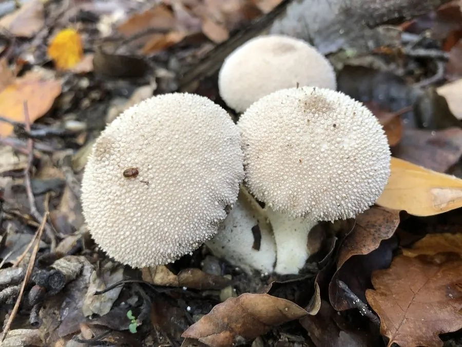

真菌 · 真菌界
网纹马勃 Lycoperdon perlatum

网纹马勃是常见的球形真菌，幼时白色可食，成熟后内部变成褐色孢子粉，被触碰会喷出“烟”，孢子粉可入药。
- 分类
- 门担子菌门纲伞菌纲目伞菌目科蘑菇科属马勃属
- 栖息环境
- 林地、草地、路旁与腐殖质丰富的土壤，夏秋季成群出现
- 地理分布
- 北半球温带与亚热带广泛分布，中国各地林区常见
- 保护级别
- 暂无评估（野生食用菌）
物种志
网纹马勃是担子菌门伞菌目的真菌，子实体近球形或梨形，高 3–8 cm，直径 2–6 cm，由不育的基部（柄状部分）和产孢的头部组成。幼时表面白色至淡黄色，密布细小疣状突起，疣脱落后留下网状斑痕，因此得名。成熟后内部组织变成褐色孢子粉，顶端开一小孔，雨滴或触碰时孢子如烟雾般喷出。
网纹马勃生于林地、草地、路旁与腐殖质丰富的土壤上，夏秋季成群出现，是分布很广的腐生真菌。幼嫩时菌肉白色、质地紧实，可炒食或做汤；成熟后孢子粉呈褐色，质地如粉，不再可食。它的孢子粉在中药里称“马勃”，有清热利咽、止血之效，可用于咽喉肿痛与外伤止血。网纹马勃没有菌褶和菌柄，靠孢子随风传播，是理解真菌繁殖方式的典型材料。
形态与习性
- 子实体近球形或梨形，高 3–8 cm
- 表面细小疣状突起，脱落后呈网状
- 成熟内部变为褐色孢子粉
- 食用性幼嫩时可食，成熟后不可食
- 药用孢子粉入药称“马勃”
- 生境林地、草地与腐殖质土壤
趣味知识
- 网纹马勃成熟后一碰就会喷出褐色孢子粉，像冒烟一样。
- 它只有幼嫩、菌肉洁白时才可食用，成熟后只剩孢子粉。
- 中药“马勃”就是它的孢子粉，能清热利咽、止血。